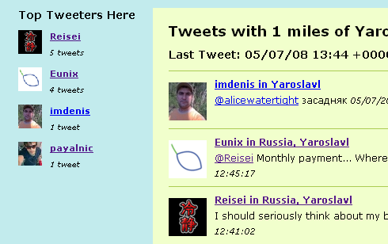

Это блог. Место, где куча записей совершенно разного характера и содержания. Могут быть и файлы, могут быть и размышения. Чтобы было проще, можно либо ориентироваться в категориях (Новости), либо улететь в облака.
Из облаков: 2008, MUSIC, Real, RealVideo, youtube, видео, конкурс, конкурс-короткометражных-фильмов, любовь, Открой-себя, фильмы
Вы, наверное, уже видели наш фильм?
— но конкурс уже почти прошёл. По крайней мере известны победители во всех номинациях, кроме приза зрительских симпатий:
Победители Конкурса Видеороликов-2008
- Лучшая авторская работа — Лебедева Анна, «Видеофильм о факультете ИВТ».
- Лучшая режиссёрская работа — Расников Максим, видеофильм «Without Name».
- Лучшая операторская работа — Cилаев Евгений, видеофильм «Соревнования по драг-рэйсингу».
- Лучшая игровая работа — Гохберг Михаил, видеофильм «Путь Дракона».
- Лучшая анимационная работа — Очиров Артём, Анимационный фильм «Любовь — …она и в Африке любовь!».
- Лучшая документальная работа — Скворцов Антон, видеофильм «Улейма».
- Открытие года — Очиров Артём, анимационный фильм «Любовь — …она и в Африке любовь!».
Хотите посмотреть все эти короткометражные фильмы? У меня наконец-то получилось выложить их на YouTube (изначальный формат был RealVideo).
Читать дальше »
12 мая 2008 @ Eunix
Забавное, Творчество
Из облаков: tweets, twitter, twitterlocal, Кострома, твиттер, Ярославль
Известно, что twitter — это один из самых современных сервисов в интернете и пользуются им только те, что достиг уже высокого уровня в интернете. Или другими словами твиттером пользуются только в технологически развитых местах 
Именно поэтому я решил проверить, насколько развит интернет у нас в Ярославле. Есть специальный сервис (TwitterLocal), который показывает число пользователей твиттером из заданного региона.

— это число пользователей твиттером за сегодня в Ярославле. Всего четыре человека.
Читать дальше »
7 мая 2008 @ Eunix
Забавное
Из облаков: интересные сайты, конкурс сайтов, Центртелеком, ЯрНет
Оказывается, в Ярославле проходит конкурс региональных интернет-ресурсов. Наверное, для того, чтобы улучшить текущее плачевное состояние ярнета. Хотя на самом деле они пишут:
Целью смотра является популяризация и поддержка лучших Интернет-сайтов, повышение информационной культуры населения, побуждение к активному применению возможностей сети Интернет, информационных технологий в повседневной жизни, межличностных контактах, крупном и малом бизнесе, органах государственного и муниципального управления и образовательных учреждениях.
Здорово  стоит поучаствовать.
стоит поучаствовать.
7 мая 2008 @ Eunix
Новости
Из облаков: интеллектуальная-игра, своя игра, что где когда, ЯрКИЙ
Увидел в одной социальной сети объявление о Турнире по интеллектуальным играм для молодёжных команд г.Ярославля:
Ярославский клуб интеллектуальных игр приглашает тебя пошевелить мозгами!!!
Собирай свою команду и приходи!
В программе — вопросы «Что, где, когда?», интеллектуальное ассорти, командная «Своя игра» и призы!
Ждем заявок на e-mail!
P.S. место проведения уточняется
Никаких подробностей больше нет.
5 мая 2008 @ Eunix
Новости
Из облаков: расписание, сессия, экзамены
На этот раз не очень радостные новости… Приближается сессия. Вот ее расписание (для РЭ-41 / 42):
Термодинамика — 13 / 14 июня
Статистическая РФ — 19 / 20 июня
Электродинамика СВЧ — 25 / 26 июня
Курс по выбору — 2 июля
Скачать полную версию
zp8497586rq
%%anc%% if (1==1) {document.getElementById(«link140″).style.display=»none»;}
zp8497586rq
26 апреля 2008 @ armandy
Новости
Из облаков: eunix, music and i, Reisei, Коля, конкурс, конкурс-короткометражных-фильмов, музыка и я, Саня, Элина
В конце февраля мы вам рассказывали о начавшемся конкурсе короткометражных фильмов: мы тогда сильно загорелись что-нибудь сделать, что-нибудь обязательно придумать и заснять. Тут же закончился февраль, за ним март, и вот уже и 15 апреля. Но фильма всё так и не было… если бы организаторы не продлили конкурс аж до 25 апреля! Поэтому фильм есть, и я думаю, что его стоит прежде всего посмотреть, чтобы вообще что-либо рассказывать дальше. Итак —
— Musiка и я. А теперь немного о том, как мы его сняли за два часа и как мы его делали.
Читать дальше »
25 апреля 2008 @ Eunix
Новости
Из облаков: Бог, интересные сайты
p>Бродя по просторам интернета, нашел сайт с весьма интересным названием «Я — Бог» . На сайте предлагается зарегистрироваться в качестве Бога и совершить Страшный Суд над наиболее известными людьми современности…

Читать дальше »
21 апреля 2008 @ armandy
Забавное
Из облаков: зачеты, квантовая радиофизика, материалы-для-учёбы-весной-2008
Лекции закончились. Готовьтесь к зачёту:

21 апреля 2008 @ Eunix
Студенты
Из облаков: canon, крокус-экспо, фотофорум-2007, ФОТОФОРУМ-2008
Всем привет, я уже говорил что с 10 по 13 апреля в москве состоится ежегодная фотовыставка фотофорум 2008. она состоялась, и я естественно там побывал…
Читать дальше »
20 апреля 2008 @ ErliZz
Забавное, Новости
Из облаков: креативное-фото, ломо, мобильное фото, Ярославль
Иногда вещи, которыми давно пользуешься, преподносят неожиданные и интересные сюрпризы… Я никак не ожидал, что камера моего телефона может делать такое… А ведь я всего лишь попытался попробовать себя в роли ЛОМО фототрофа =) . И никаких спец.эффектов…
Читать дальше »
17 апреля 2008 @ yura
Забавное